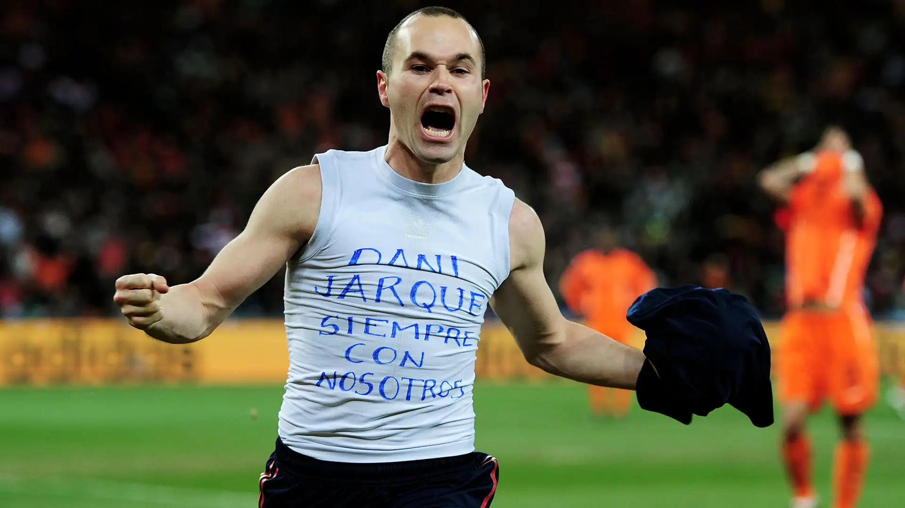

Andres Iniesta Lujan is known as the quiet genius who controlled Spain’s midfield. Few realize that at the height of his career, Iniesta wanted the day to end as quickly as possible so he could take his medication and rest. Inestia’s story highlights that success does not inherently protect you from mental health hardship and that even when you are at your peak, you can still face hidden obstacles.
Iniesta was born on May 11, 1984, in a tiny village in Albacete, Spain. Unlike most football superstars who grew up around youth academies surrounded by attention, Iniesta grew up in a quiet farming village. He was naturally shy, quiet, and humble. His parents owned a small business and emphasized a person’s character, respect, and hard work over their fame.
Football would quickly become Iniesta’s escape from the problems that affected him. At the age of 8, he was recognized as one of Spain’s brightest talents,s and at 12 years old, Barcelona invited him to join La Masia.
Although provided with a stellar opportunity, it was a bittersweet moment for him. Accepting the offer meant leaving everything he knew. Replacing his quiet and peaceful life with a place where all eyes and cameras were on him.
Iniesta later admitted to crying every night after arriving because he wanted to go home. His father encouraged him to stay, believing he would one day thank him for listening to his words and persevering through the struggle.
Iniesta’s quiet personality made it especially difficult for him to become acquainted with his teammates and make friends. He felt isolated.
Pep Guardiola, Barcelona’s captain at that time, heard about this teenager and sent a signed photograph, encouraging him to continue persevering, helping Iniesta feel as though he belonged. Over the next decade, these small boosts of motivation helped him to remain at La Masia, which would later lead to him becoming one of football’s greatest midfielders. His brilliance came from his football intelligence and making every one of his teammates look better with his plays.
However, on the inside, the most successful moments of his career were the hardest period of Iniesta’s life. In May 2009, he scored one of the most famous goals in football history, sending him to the finals of the Champions League tournament; however, months later, tragedy would strike, and his close friend, Dani Jarque, would pass away from cardiac arrest at only 26.
Although his friend's passing was not the only thing that led to Iniesta’s depression, it was definitely a moment that tipped him over the edge.
“Iniesta suffered from severe depression on the inside while fans celebrated his success on the outside.”
Iniesta suffered from severe depression on the inside while fans celebrated his success on the outside. He lost enjoyment in life, winning football matches felt empty, and he simply wanted to sleep every day.
As his mental health declined, his injuries began piling up, leading to an unbearable “hell” both mentally and physically. He would seek out professional help, openly crediting his doctors, psychologists, and friends for his recovery.
Months after wondering if he would even make it to the Spain World Cup squad, Iniesta would produce the greatest moment of his career, scoring in the 116th minute against the Netherlands to give Spain its first World Cup. As he celebrated, he would remove his jersey, which showed a white shirt that served as a tribute to Dani Jarque.
Years after retiring, Iniesta remained open about discussing depression and has said that people assume that athletes live perfect lives because of their success, but this truly is not the case. He would release a book where he reflected on his hidden pain and spoke openly of the importance of getting the help that is needed. Today, Iniesta is not only regarded as one of the greatest midfielders in football history but also as one of the first to openly discuss and normalize conversations surrounding mental health.
References
Sources
- FIFA. Andrés Iniesta on Spain's Triumph and Dani Jarque Tribute. (external link)
- FIFA. Tribute to Andrés Iniesta's Career and Early Life. (external link)
- FIFA (Spanish). Interview Discussing His Mental Struggles Before the 2010 World Cup. (external link)
- El País. “Andrés Iniesta: ‘No dejaba salir el dolor, lo intentaba tapar y el fútbol me consolaba.’” (2025). (external link)
- AS. “El código Iniesta.” (external link)